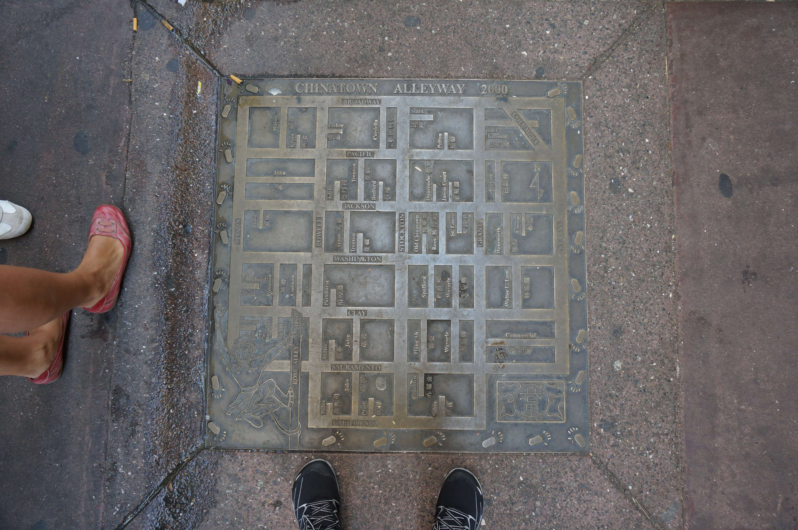
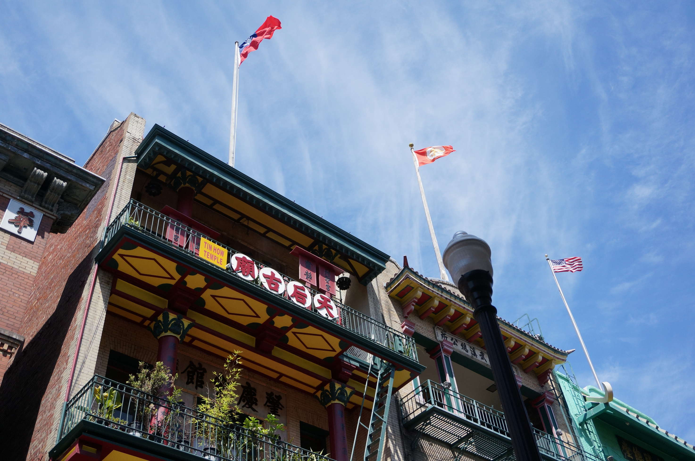
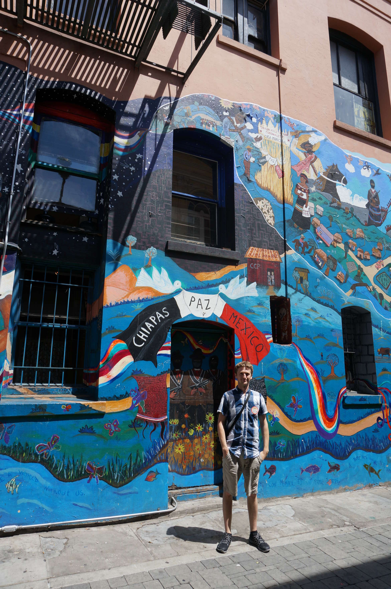
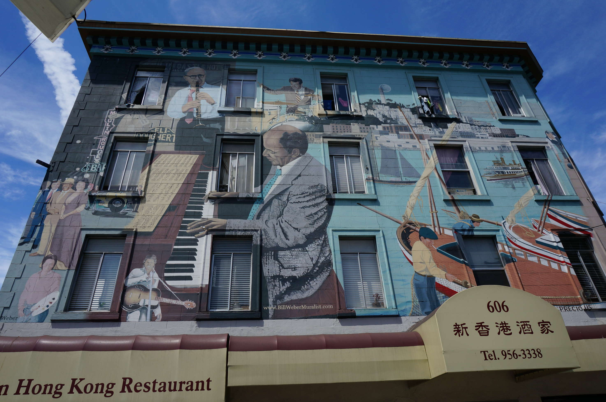
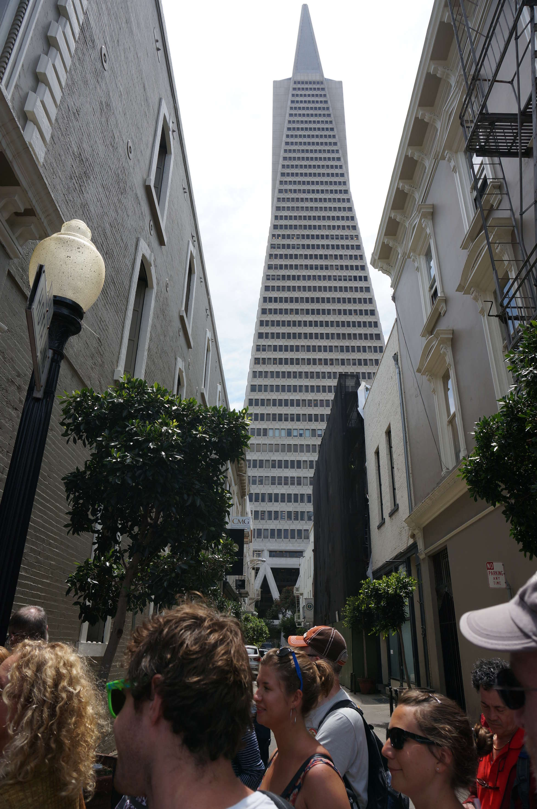
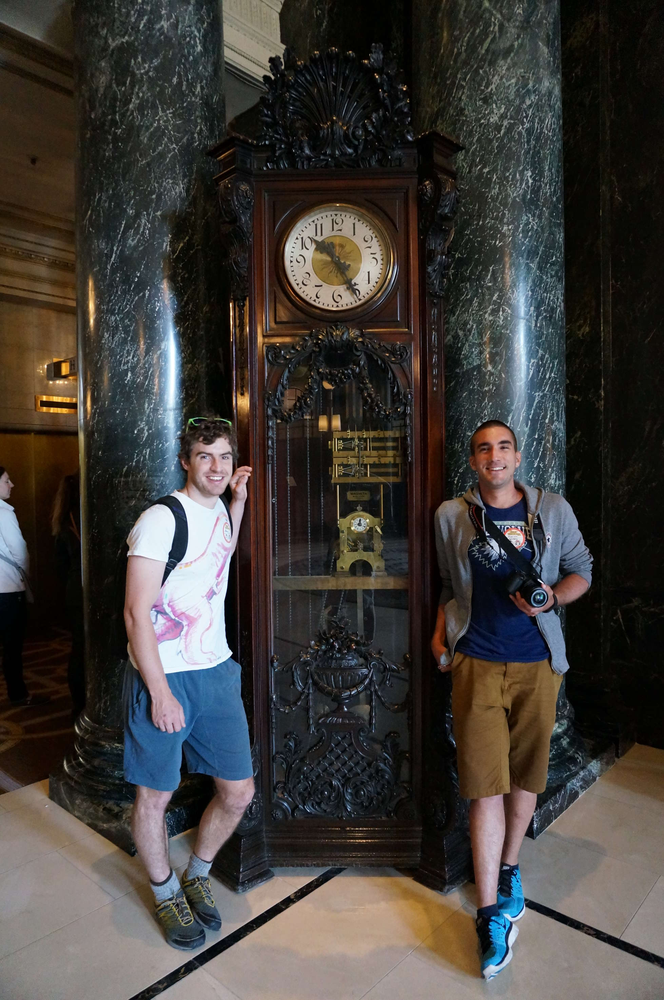
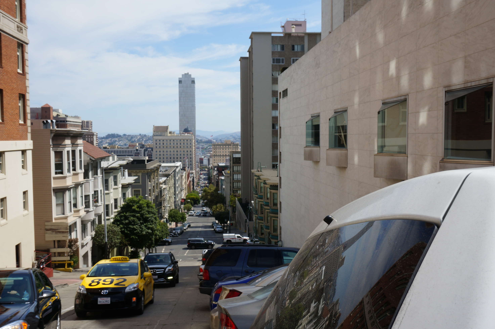
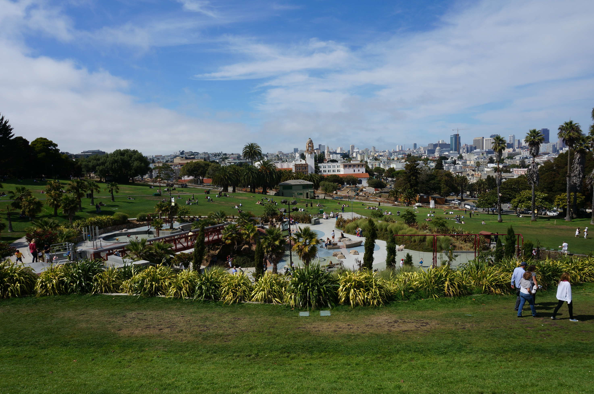
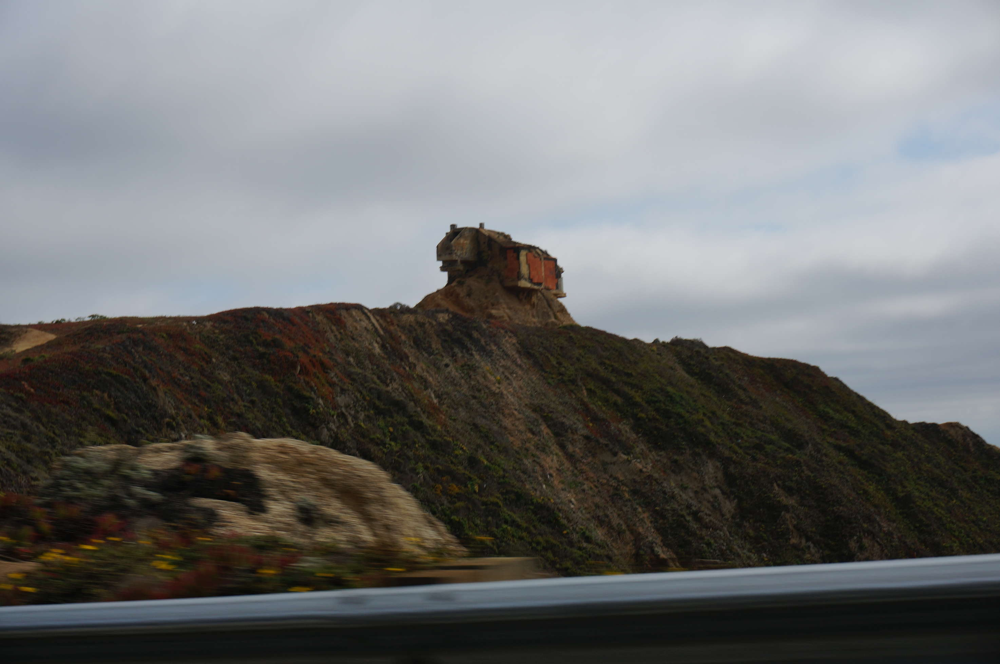
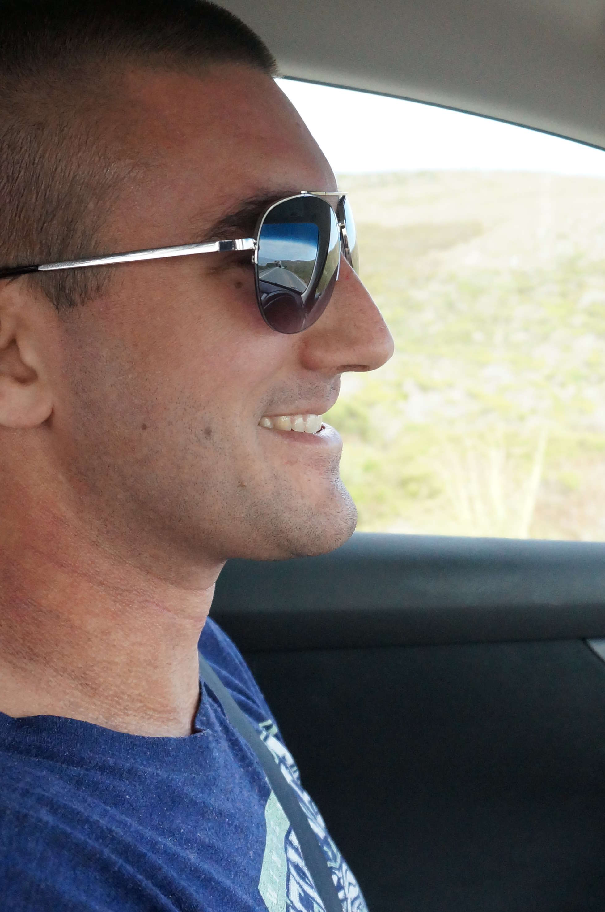

Berry and I flew into San Fransisco late at night and met Florian Sense. After picking up the car, we drove to the Amsterdam Youth Hostel for a few hours sleep.
The next morning, we signed up for a walking tour of the city. It was kinda interesting to hear the history of the city, but not scintillating. Much of the tour involved China Town.
Tin How temple
Cool street art
Me pondering street art as hard as I can
Some more street art
Street art? Not sure it counts if it's floating...
Bear in mind these skyscrapers need to be built to withstand earthquakes. Kind of impressive.
My bros by an old clock. This clock has a clock inside it. Recursive clocking.
Obligatory OMG SAN FRANSISCO STEEP shot. Damn though. San Fransisco is steep.
Dolores park - pretty, chilled out park with an awesome view of the city. Curious smell of grass everywhere.
Next, we drove south, stopping at a Walmart to buy a $30 tent and camping supplies. For the next 6 weeks, we spent most of our timing living from that tent.
On the drive there was a house which took an strange approach to being a house.
We were pretty elated at this point. Everything on the drive was really beautiful, it felt exactly like the start of an awesome trip should.
We kept going south, all the way to Big Sur
.